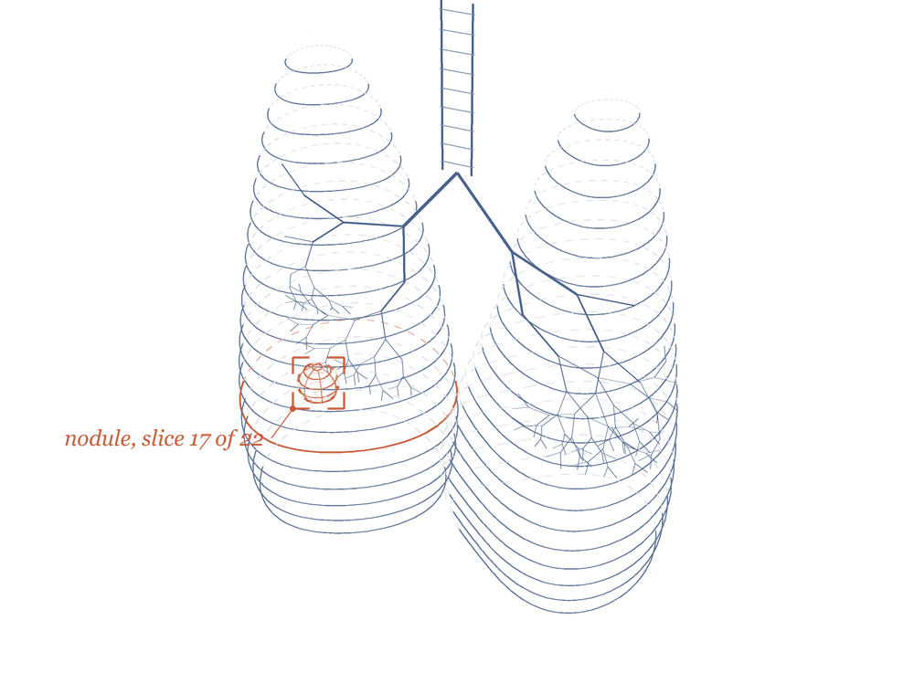

Cancer research workbench
One research assistant for every cancer model.
So the next model never starts from scratch. Find the data, catch the leaks, run the specialists and compare honestly, all on one PC.
Jordi Nieves · Sebastian Rueda-Villamil · Moshe Helman · Inam Qasimi · Cal Hacks

What we built
One place where the work finally stacks up.
Catalog
Knows every public cancer dataset and model, and the fine print on each: license, access, evidence.
94 mapped · 9 installedAudit
Hunts down duplicates, conflicting labels and patient leaks before anyone trains on them.
21 duplicate pairs caughtSpecialists
Real imaging models that run on your own scans, on your own machine.
7 running locallyAssistant
Answers in plain English and shows every lookup it made to get there.
Fine-tuned, on one GPUEvaluate
One yardstick for every model, with the answer key locked away until it has predicted.
Tested on unseen hospitalsContribute
Any lab can add a model or dataset by link. It goes through the same checks and joins the catalog for everyone.
Open to every lab →Contribute
Built to grow with every lab.
Share a model or dataset as a link to your files, a zip, a Hugging Face page or a Zenodo record. We check it the same way we check everything else, then it joins the catalog so the next researcher can build on it.
- 1Describe it: what it is, the scan type and body part, the license.
- 2Link the files. We never host patient data, and identifiable data is refused.
- 3It enters the catalog as cataloged, held for review. It only climbs the evidence ladder when we reproduce it.

How we stay honest
Every claim comes with receipts.
Every model and dataset sits on one ladder. The assistant can’t call anything “ready” until it reaches step four.